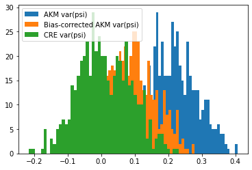
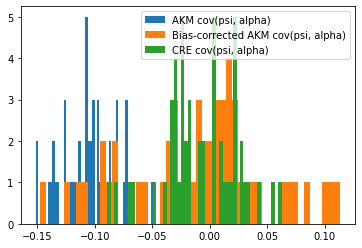

Monte Carlo example¶
[1]:
import os, sys
# Navigate to parent folder for import
os.chdir('../../..')
import pytwoway as tw
# Weird code needed for output to show
os.chdir('docs-src/source/notebooks')
stdout = sys.stdout
sys.path.insert(1, os.path.join(sys.path[0], '..'))
sys.stdout = stdout
First, optionally set parameter values for the simulated data¶
[2]:
sim_params = {'num_ind': 10000, 'num_time': 5, 'firm_size': 50, 'nk': 10, 'nl': 5, 'alpha_sig': 1, 'psi_sig': 1, 'w_sig': 5, 'csort': 1, 'cnetw': 1, 'csig': 1, 'p_move': 0.5}
Second, create a simulated Monte Carlo object using the parameter choices¶
[3]:
twmc_net = tw.TwoWayMonteCarlo(sim_params) # smc_net for simulated Monte Carlo two-way network
Third, optionally set parameter values for the Monte Carlo simulation¶
[4]:
# For FE estimation
fe_params = {'ncore': 1, 'batch': 1, 'ndraw_pii': 50, 'ndraw_tr': 5, 'check': False, 'hetero': False, 'out': 'res_fe.json', 'con': False, 'logfile': '', 'levfile': '', 'statsonly': False, 'Q': 'cov(alpha, psi)'}
# For CRE estimation
cre_params = {'ncore': 1, 'ndraw_tr': 5, 'ndp': 50, 'out': 'res_cre.json', 'posterior': False, 'wobtw': False}
# For clustering (specifically for the KMeans algorithm)
KMeans_params = {'n_clusters': 10, 'init': 'k-means++', 'n_init': 500, 'max_iter': 300, 'tol': 0.0001, 'precompute_distances': 'deprecated', 'verbose': 0, 'random_state': None, 'copy_x': True, 'n_jobs': 'deprecated', 'algorithm': 'auto'}
# For clustering
cluster_params = {'cdf_resolution': 10, 'grouping': 'quantile_all', 'year': None, 'user_KMeans': KMeans_params}
Fourth, run the Monte Carlo simulation using the parameter choices¶
[5]:
twmc_net.twfe_monte_carlo(N=500, ncore=4, fe_params=fe_params, cre_params=cre_params, cluster_params=cluster_params)
100%|██████████| 5/5 [00:00<00:00, 167.91it/s]
100%|██████████| 5/5 [00:00<00:00, 165.76it/s]
100%|██████████| 5/5 [00:00<00:00, 145.74it/s]
100%|██████████| 5/5 [00:00<00:00, 130.71it/s]
100%|██████████| 5/5 [00:00<00:00, 169.45it/s]
100%|██████████| 5/5 [00:00<00:00, 160.13it/s]
100%|██████████| 5/5 [00:00<00:00, 163.83it/s]
100%|██████████| 5/5 [00:00<00:00, 16.80it/s]
100%|██████████| 5/5 [00:00<00:00, 150.55it/s]
100%|██████████| 5/5 [00:00<00:00, 134.54it/s]
100%|██████████| 5/5 [00:00<00:00, 172.72it/s]
100%|██████████| 5/5 [00:00<00:00, 144.71it/s]
100%|██████████| 5/5 [00:00<00:00, 146.61it/s]
100%|██████████| 5/5 [00:00<00:00, 129.38it/s]
100%|██████████| 5/5 [00:00<00:00, 171.01it/s]
100%|██████████| 5/5 [00:00<00:00, 140.64it/s]
100%|██████████| 5/5 [00:00<00:00, 131.49it/s]
100%|██████████| 5/5 [00:00<00:00, 138.16it/s]
100%|██████████| 5/5 [00:00<00:00, 149.69it/s]
100%|██████████| 5/5 [00:00<00:00, 129.16it/s]
0%| | 0/5 [00:00<?, ?it/s]7.66it/s]
100%|██████████| 5/5 [00:00<00:00, 113.24it/s]
100%|██████████| 5/5 [00:00<00:00, 131.43it/s]
100%|██████████| 5/5 [00:00<00:00, 133.31it/s]
100%|██████████| 5/5 [00:00<00:00, 116.01it/s]
100%|██████████| 5/5 [00:00<00:00, 124.72it/s]
100%|██████████| 5/5 [00:00<00:00, 121.04it/s]
100%|██████████| 5/5 [00:00<00:00, 117.25it/s]
100%|██████████| 5/5 [00:00<00:00, 101.27it/s]
100%|██████████| 5/5 [00:00<00:00, 103.60it/s]
100%|██████████| 5/5 [00:00<00:00, 123.56it/s]
100%|██████████| 5/5 [00:00<00:00, 117.42it/s]
100%|██████████| 5/5 [00:00<00:00, 114.35it/s]
100%|██████████| 5/5 [00:00<00:00, 111.74it/s]
100%|██████████| 5/5 [00:00<00:00, 109.62it/s]
0%| | 0/5 [00:00<?, ?it/s]3.39it/s]
100%|██████████| 5/5 [00:00<00:00, 105.08it/s]
100%|██████████| 5/5 [00:00<00:00, 100.46it/s]
100%|██████████| 5/5 [00:00<00:00, 99.99it/s]
100%|██████████| 5/5 [00:00<00:00, 102.77it/s]
100%|██████████| 5/5 [00:00<00:00, 99.73it/s]
100%|██████████| 5/5 [00:00<00:00, 93.72it/s]
100%|██████████| 5/5 [00:00<00:00, 105.58it/s]
100%|██████████| 5/5 [00:00<00:00, 93.56it/s]
100%|██████████| 5/5 [00:00<00:00, 98.92it/s]
100%|██████████| 5/5 [00:00<00:00, 90.91it/s]
100%|██████████| 5/5 [00:00<00:00, 98.91it/s]
100%|██████████| 5/5 [00:00<00:00, 95.46it/s]
100%|██████████| 5/5 [00:00<00:00, 92.35it/s]
100%|██████████| 5/5 [00:00<00:00, 95.49it/s]
100%|██████████| 5/5 [00:00<00:00, 20.13it/s]
100%|██████████| 5/5 [00:00<00:00, 92.25it/s]
100%|██████████| 5/5 [00:00<00:00, 93.59it/s]
100%|██████████| 5/5 [00:00<00:00, 88.21it/s]
100%|██████████| 5/5 [00:00<00:00, 91.90it/s]
100%|██████████| 5/5 [00:00<00:00, 85.39it/s]
100%|██████████| 5/5 [00:00<00:00, 88.52it/s]
100%|██████████| 5/5 [00:00<00:00, 91.10it/s]
100%|██████████| 5/5 [00:00<00:00, 89.46it/s]
100%|██████████| 5/5 [00:00<00:00, 81.12it/s]
100%|██████████| 5/5 [00:00<00:00, 89.69it/s]
100%|██████████| 5/5 [00:00<00:00, 87.09it/s]
100%|██████████| 5/5 [00:00<00:00, 80.25it/s]
100%|██████████| 5/5 [00:00<00:00, 84.10it/s]
100%|██████████| 5/5 [00:00<00:00, 87.02it/s]
100%|██████████| 5/5 [00:00<00:00, 82.09it/s]
100%|██████████| 5/5 [00:00<00:00, 81.24it/s]
100%|██████████| 5/5 [00:00<00:00, 82.84it/s]
100%|██████████| 5/5 [00:00<00:00, 84.30it/s]
100%|██████████| 5/5 [00:00<00:00, 78.08it/s]
100%|██████████| 5/5 [00:00<00:00, 75.72it/s]
100%|██████████| 5/5 [00:00<00:00, 80.55it/s]
100%|██████████| 5/5 [00:00<00:00, 70.37it/s]
100%|██████████| 5/5 [00:00<00:00, 68.55it/s]
100%|██████████| 5/5 [00:00<00:00, 76.15it/s]
100%|██████████| 5/5 [00:00<00:00, 78.88it/s]
100%|██████████| 5/5 [00:00<00:00, 74.72it/s]
100%|██████████| 5/5 [00:00<00:00, 69.14it/s]
100%|██████████| 5/5 [00:00<00:00, 68.30it/s]
100%|██████████| 5/5 [00:00<00:00, 67.33it/s]
100%|██████████| 5/5 [00:00<00:00, 70.12it/s]
100%|██████████| 5/5 [00:00<00:00, 72.90it/s]
100%|██████████| 5/5 [00:00<00:00, 71.87it/s]
100%|██████████| 5/5 [00:00<00:00, 67.82it/s]
100%|██████████| 5/5 [00:00<00:00, 70.23it/s]
100%|██████████| 5/5 [00:00<00:00, 68.63it/s]
100%|██████████| 5/5 [00:00<00:00, 60.94it/s]
100%|██████████| 5/5 [00:00<00:00, 64.38it/s]
100%|██████████| 5/5 [00:00<00:00, 60.32it/s]
100%|██████████| 5/5 [00:00<00:00, 63.56it/s]
100%|██████████| 5/5 [00:00<00:00, 50.77it/s]
100%|██████████| 5/5 [00:00<00:00, 43.40it/s]
100%|██████████| 5/5 [00:00<00:00, 43.80it/s]
100%|██████████| 5/5 [00:00<00:00, 44.71it/s]
100%|██████████| 5/5 [00:00<00:00, 40.82it/s]
100%|██████████| 5/5 [00:00<00:00, 41.10it/s]
100%|██████████| 5/5 [00:00<00:00, 44.77it/s]
100%|██████████| 5/5 [00:00<00:00, 39.75it/s]
100%|██████████| 5/5 [00:00<00:00, 59.41it/s]
100%|██████████| 5/5 [00:00<00:00, 58.04it/s]
100%|██████████| 5/5 [00:00<00:00, 59.46it/s]
100%|██████████| 5/5 [00:00<00:00, 59.18it/s]
100%|██████████| 5/5 [00:00<00:00, 63.68it/s]
100%|██████████| 5/5 [00:00<00:00, 58.12it/s]
100%|██████████| 5/5 [00:00<00:00, 58.59it/s]
100%|██████████| 5/5 [00:00<00:00, 58.16it/s]
100%|██████████| 5/5 [00:00<00:00, 59.33it/s]
100%|██████████| 5/5 [00:00<00:00, 58.06it/s]
100%|██████████| 5/5 [00:00<00:00, 56.03it/s]
100%|██████████| 5/5 [00:00<00:00, 60.71it/s]
0%| | 0/5 [00:00<?, ?it/s].31it/s]
100%|██████████| 5/5 [00:00<00:00, 50.98it/s]
100%|██████████| 5/5 [00:00<00:00, 53.19it/s]
100%|██████████| 5/5 [00:00<00:00, 52.19it/s]
100%|██████████| 5/5 [00:00<00:00, 47.84it/s]
100%|██████████| 5/5 [00:00<00:00, 44.96it/s]
100%|██████████| 5/5 [00:00<00:00, 45.35it/s]
100%|██████████| 5/5 [00:00<00:00, 52.64it/s]
100%|██████████| 5/5 [00:00<00:00, 52.36it/s]
100%|██████████| 5/5 [00:00<00:00, 47.50it/s]
100%|██████████| 5/5 [00:00<00:00, 47.15it/s]
100%|██████████| 5/5 [00:00<00:00, 52.76it/s]
100%|██████████| 5/5 [00:00<00:00, 55.01it/s]
100%|██████████| 5/5 [00:00<00:00, 55.68it/s]
100%|██████████| 5/5 [00:00<00:00, 54.09it/s]
100%|██████████| 5/5 [00:00<00:00, 54.20it/s]
100%|██████████| 5/5 [00:00<00:00, 47.41it/s]
100%|██████████| 5/5 [00:00<00:00, 51.79it/s]
100%|██████████| 5/5 [00:00<00:00, 48.15it/s]
100%|██████████| 5/5 [00:00<00:00, 17.08it/s]
100%|██████████| 5/5 [00:00<00:00, 38.67it/s]
100%|██████████| 5/5 [00:00<00:00, 35.49it/s]
100%|██████████| 5/5 [00:00<00:00, 38.21it/s]
100%|██████████| 5/5 [00:00<00:00, 40.64it/s]
100%|██████████| 5/5 [00:00<00:00, 40.71it/s]
100%|██████████| 5/5 [00:00<00:00, 42.34it/s]
100%|██████████| 5/5 [00:00<00:00, 43.05it/s]
100%|██████████| 5/5 [00:00<00:00, 43.85it/s]
100%|██████████| 5/5 [00:00<00:00, 43.68it/s]
100%|██████████| 5/5 [00:00<00:00, 43.20it/s]
100%|██████████| 5/5 [00:00<00:00, 45.29it/s]
100%|██████████| 5/5 [00:00<00:00, 44.35it/s]
100%|██████████| 5/5 [00:00<00:00, 44.11it/s]
100%|██████████| 5/5 [00:00<00:00, 43.98it/s]
100%|██████████| 5/5 [00:00<00:00, 45.73it/s]
100%|██████████| 5/5 [00:00<00:00, 43.49it/s]
100%|██████████| 5/5 [00:00<00:00, 43.59it/s]
100%|██████████| 5/5 [00:00<00:00, 44.15it/s]
100%|██████████| 5/5 [00:00<00:00, 40.77it/s]
100%|██████████| 5/5 [00:00<00:00, 39.83it/s]
100%|██████████| 5/5 [00:00<00:00, 42.24it/s]
100%|██████████| 5/5 [00:00<00:00, 40.55it/s]
100%|██████████| 5/5 [00:00<00:00, 38.77it/s]
100%|██████████| 5/5 [00:00<00:00, 38.53it/s]
100%|██████████| 5/5 [00:00<00:00, 43.20it/s]
100%|██████████| 5/5 [00:00<00:00, 42.14it/s]
100%|██████████| 5/5 [00:00<00:00, 41.98it/s]
100%|██████████| 5/5 [00:00<00:00, 42.89it/s]
100%|██████████| 5/5 [00:00<00:00, 41.05it/s]
100%|██████████| 5/5 [00:00<00:00, 38.75it/s]
100%|██████████| 5/5 [00:00<00:00, 35.00it/s]
100%|██████████| 5/5 [00:00<00:00, 35.84it/s]
100%|██████████| 5/5 [00:00<00:00, 35.00it/s]
100%|██████████| 5/5 [00:00<00:00, 34.76it/s]
100%|██████████| 5/5 [00:00<00:00, 32.30it/s]
100%|██████████| 5/5 [00:00<00:00, 14.46it/s]
100%|██████████| 5/5 [00:00<00:00, 35.65it/s]
100%|██████████| 5/5 [00:00<00:00, 36.02it/s]
100%|██████████| 5/5 [00:00<00:00, 34.14it/s]
100%|██████████| 5/5 [00:00<00:00, 34.44it/s]
100%|██████████| 5/5 [00:00<00:00, 40.46it/s]
100%|██████████| 5/5 [00:00<00:00, 39.55it/s]
100%|██████████| 5/5 [00:00<00:00, 38.47it/s]
100%|██████████| 5/5 [00:00<00:00, 36.85it/s]
100%|██████████| 5/5 [00:00<00:00, 35.47it/s]
100%|██████████| 5/5 [00:00<00:00, 33.09it/s]
100%|██████████| 5/5 [00:00<00:00, 33.38it/s]
100%|██████████| 5/5 [00:00<00:00, 32.08it/s]
100%|██████████| 5/5 [00:00<00:00, 30.93it/s]
100%|██████████| 5/5 [00:00<00:00, 31.56it/s]
100%|██████████| 5/5 [00:00<00:00, 30.89it/s]
100%|██████████| 5/5 [00:00<00:00, 29.63it/s]
100%|██████████| 5/5 [00:00<00:00, 35.37it/s]
100%|██████████| 5/5 [00:00<00:00, 34.24it/s]
100%|██████████| 5/5 [00:00<00:00, 36.03it/s]
100%|██████████| 5/5 [00:00<00:00, 35.23it/s]
100%|██████████| 5/5 [00:00<00:00, 36.45it/s]
100%|██████████| 5/5 [00:00<00:00, 36.56it/s]
100%|██████████| 5/5 [00:00<00:00, 36.29it/s]
100%|██████████| 5/5 [00:00<00:00, 16.81it/s]
100%|██████████| 5/5 [00:00<00:00, 36.66it/s]
100%|██████████| 5/5 [00:00<00:00, 37.48it/s]
100%|██████████| 5/5 [00:00<00:00, 37.03it/s]
100%|██████████| 5/5 [00:00<00:00, 35.93it/s]
100%|██████████| 5/5 [00:00<00:00, 11.58it/s]
100%|██████████| 5/5 [00:00<00:00, 32.17it/s]
100%|██████████| 5/5 [00:00<00:00, 33.16it/s]
100%|██████████| 5/5 [00:00<00:00, 32.68it/s]
100%|██████████| 5/5 [00:00<00:00, 33.35it/s]
100%|██████████| 5/5 [00:00<00:00, 30.53it/s]
100%|██████████| 5/5 [00:00<00:00, 31.34it/s]
100%|██████████| 5/5 [00:00<00:00, 30.75it/s]
100%|██████████| 5/5 [00:00<00:00, 33.87it/s]
100%|██████████| 5/5 [00:00<00:00, 32.68it/s]
100%|██████████| 5/5 [00:00<00:00, 31.52it/s]
100%|██████████| 5/5 [00:00<00:00, 32.35it/s]
100%|██████████| 5/5 [00:00<00:00, 33.69it/s]
100%|██████████| 5/5 [00:00<00:00, 32.29it/s]
100%|██████████| 5/5 [00:00<00:00, 32.03it/s]
100%|██████████| 5/5 [00:00<00:00, 31.48it/s]
100%|██████████| 5/5 [00:00<00:00, 30.17it/s]
100%|██████████| 5/5 [00:00<00:00, 30.07it/s]
100%|██████████| 5/5 [00:00<00:00, 30.23it/s]
100%|██████████| 5/5 [00:00<00:00, 29.42it/s]
100%|██████████| 5/5 [00:00<00:00, 32.93it/s]
100%|██████████| 5/5 [00:00<00:00, 31.93it/s]
100%|██████████| 5/5 [00:00<00:00, 32.48it/s]
100%|██████████| 5/5 [00:00<00:00, 32.32it/s]
100%|██████████| 5/5 [00:00<00:00, 31.42it/s]
100%|██████████| 5/5 [00:00<00:00, 29.98it/s]
100%|██████████| 5/5 [00:00<00:00, 30.85it/s]
100%|██████████| 5/5 [00:00<00:00, 29.07it/s]
100%|██████████| 5/5 [00:00<00:00, 28.89it/s]
100%|██████████| 5/5 [00:00<00:00, 28.73it/s]
100%|██████████| 5/5 [00:00<00:00, 28.41it/s]
100%|██████████| 5/5 [00:00<00:00, 28.67it/s]
100%|██████████| 5/5 [00:00<00:00, 30.38it/s]
100%|██████████| 5/5 [00:00<00:00, 12.45it/s]
100%|██████████| 5/5 [00:00<00:00, 9.47it/s]
100%|██████████| 5/5 [00:00<00:00, 27.44it/s]
100%|██████████| 5/5 [00:00<00:00, 29.81it/s]
100%|██████████| 5/5 [00:00<00:00, 28.15it/s]
100%|██████████| 5/5 [00:00<00:00, 29.15it/s]
100%|██████████| 5/5 [00:00<00:00, 29.93it/s]
100%|██████████| 5/5 [00:00<00:00, 28.78it/s]
100%|██████████| 5/5 [00:00<00:00, 29.22it/s]
100%|██████████| 5/5 [00:00<00:00, 28.55it/s]
100%|██████████| 5/5 [00:00<00:00, 28.78it/s]
100%|██████████| 5/5 [00:00<00:00, 27.88it/s]
100%|██████████| 5/5 [00:00<00:00, 27.03it/s]
100%|██████████| 5/5 [00:00<00:00, 27.20it/s]
100%|██████████| 5/5 [00:00<00:00, 28.95it/s]
100%|██████████| 5/5 [00:00<00:00, 28.14it/s]
100%|██████████| 5/5 [00:00<00:00, 28.02it/s]
100%|██████████| 5/5 [00:00<00:00, 28.15it/s]
100%|██████████| 5/5 [00:00<00:00, 28.36it/s]
100%|██████████| 5/5 [00:00<00:00, 28.50it/s]
100%|██████████| 5/5 [00:00<00:00, 27.94it/s]
100%|██████████| 5/5 [00:00<00:00, 27.24it/s]
100%|██████████| 5/5 [00:00<00:00, 27.22it/s]
100%|██████████| 5/5 [00:00<00:00, 26.08it/s]
100%|██████████| 5/5 [00:00<00:00, 25.53it/s]
100%|██████████| 5/5 [00:00<00:00, 24.63it/s]
100%|██████████| 5/5 [00:00<00:00, 27.32it/s]
100%|██████████| 5/5 [00:00<00:00, 26.43it/s]
100%|██████████| 5/5 [00:00<00:00, 25.45it/s]
100%|██████████| 5/5 [00:00<00:00, 26.54it/s]
100%|██████████| 5/5 [00:00<00:00, 26.78it/s]
100%|██████████| 5/5 [00:00<00:00, 27.60it/s]
100%|██████████| 5/5 [00:00<00:00, 26.27it/s]
100%|██████████| 5/5 [00:00<00:00, 13.80it/s]
100%|██████████| 5/5 [00:00<00:00, 27.32it/s]
100%|██████████| 5/5 [00:00<00:00, 27.25it/s]
100%|██████████| 5/5 [00:00<00:00, 26.01it/s]
100%|██████████| 5/5 [00:00<00:00, 26.17it/s]
100%|██████████| 5/5 [00:00<00:00, 24.61it/s]
100%|██████████| 5/5 [00:00<00:00, 24.38it/s]
100%|██████████| 5/5 [00:00<00:00, 23.92it/s]
100%|██████████| 5/5 [00:00<00:00, 24.39it/s]
100%|██████████| 5/5 [00:00<00:00, 28.01it/s]
100%|██████████| 5/5 [00:00<00:00, 24.38it/s]
100%|██████████| 5/5 [00:00<00:00, 25.57it/s]
100%|██████████| 5/5 [00:00<00:00, 25.73it/s]
100%|██████████| 5/5 [00:00<00:00, 25.99it/s]
100%|██████████| 5/5 [00:00<00:00, 25.17it/s]
100%|██████████| 5/5 [00:00<00:00, 25.09it/s]
100%|██████████| 5/5 [00:00<00:00, 24.56it/s]
100%|██████████| 5/5 [00:00<00:00, 25.01it/s]
100%|██████████| 5/5 [00:00<00:00, 23.52it/s]
100%|██████████| 5/5 [00:00<00:00, 24.20it/s]
100%|██████████| 5/5 [00:00<00:00, 24.66it/s]
100%|██████████| 5/5 [00:00<00:00, 27.12it/s]
100%|██████████| 5/5 [00:00<00:00, 26.18it/s]
100%|██████████| 5/5 [00:00<00:00, 25.44it/s]
100%|██████████| 5/5 [00:00<00:00, 26.16it/s]
100%|██████████| 5/5 [00:00<00:00, 27.01it/s]
100%|██████████| 5/5 [00:00<00:00, 26.37it/s]
100%|██████████| 5/5 [00:00<00:00, 24.47it/s]
100%|██████████| 5/5 [00:00<00:00, 24.76it/s]
100%|██████████| 5/5 [00:00<00:00, 26.22it/s]
100%|██████████| 5/5 [00:00<00:00, 26.20it/s]
100%|██████████| 5/5 [00:00<00:00, 11.35it/s]
100%|██████████| 5/5 [00:00<00:00, 25.14it/s]
100%|██████████| 5/5 [00:00<00:00, 24.73it/s]
100%|██████████| 5/5 [00:00<00:00, 24.97it/s]
100%|██████████| 5/5 [00:00<00:00, 25.45it/s]
100%|██████████| 5/5 [00:00<00:00, 24.90it/s]
100%|██████████| 5/5 [00:00<00:00, 24.50it/s]
100%|██████████| 5/5 [00:00<00:00, 24.27it/s]
100%|██████████| 5/5 [00:00<00:00, 24.10it/s]
100%|██████████| 5/5 [00:00<00:00, 23.70it/s]
100%|██████████| 5/5 [00:00<00:00, 24.65it/s]
100%|██████████| 5/5 [00:00<00:00, 24.55it/s]
100%|██████████| 5/5 [00:00<00:00, 23.77it/s]
100%|██████████| 5/5 [00:00<00:00, 24.39it/s]
100%|██████████| 5/5 [00:00<00:00, 25.10it/s]
100%|██████████| 5/5 [00:00<00:00, 23.26it/s]
100%|██████████| 5/5 [00:00<00:00, 23.56it/s]
100%|██████████| 5/5 [00:00<00:00, 22.41it/s]
100%|██████████| 5/5 [00:00<00:00, 22.18it/s]
100%|██████████| 5/5 [00:00<00:00, 23.14it/s]
100%|██████████| 5/5 [00:00<00:00, 23.39it/s]
100%|██████████| 5/5 [00:00<00:00, 12.20it/s]
100%|██████████| 5/5 [00:00<00:00, 24.12it/s]
100%|██████████| 5/5 [00:00<00:00, 25.41it/s]
100%|██████████| 5/5 [00:00<00:00, 24.80it/s]
100%|██████████| 5/5 [00:00<00:00, 24.59it/s]
100%|██████████| 5/5 [00:00<00:00, 23.03it/s]
100%|██████████| 5/5 [00:00<00:00, 22.34it/s]
100%|██████████| 5/5 [00:00<00:00, 22.60it/s]
100%|██████████| 5/5 [00:00<00:00, 22.98it/s]
100%|██████████| 5/5 [00:00<00:00, 22.11it/s]
100%|██████████| 5/5 [00:00<00:00, 21.98it/s]
100%|██████████| 5/5 [00:00<00:00, 21.91it/s]
100%|██████████| 5/5 [00:00<00:00, 21.73it/s]
100%|██████████| 5/5 [00:00<00:00, 23.19it/s]
100%|██████████| 5/5 [00:00<00:00, 23.69it/s]
100%|██████████| 5/5 [00:00<00:00, 23.68it/s]
100%|██████████| 5/5 [00:00<00:00, 23.63it/s]
100%|██████████| 5/5 [00:00<00:00, 22.78it/s]
100%|██████████| 5/5 [00:00<00:00, 22.69it/s]
100%|██████████| 5/5 [00:00<00:00, 22.50it/s]
100%|██████████| 5/5 [00:00<00:00, 22.59it/s]
100%|██████████| 5/5 [00:00<00:00, 22.35it/s]
100%|██████████| 5/5 [00:00<00:00, 21.94it/s]
100%|██████████| 5/5 [00:00<00:00, 20.42it/s]
100%|██████████| 5/5 [00:00<00:00, 21.85it/s]
100%|██████████| 5/5 [00:00<00:00, 22.97it/s]
100%|██████████| 5/5 [00:00<00:00, 22.88it/s]
100%|██████████| 5/5 [00:00<00:00, 22.18it/s]
100%|██████████| 5/5 [00:00<00:00, 22.34it/s]
100%|██████████| 5/5 [00:00<00:00, 21.75it/s]
100%|██████████| 5/5 [00:00<00:00, 21.63it/s]
100%|██████████| 5/5 [00:00<00:00, 21.42it/s]
100%|██████████| 5/5 [00:00<00:00, 21.68it/s]
100%|██████████| 5/5 [00:00<00:00, 20.54it/s]
100%|██████████| 5/5 [00:00<00:00, 18.73it/s]
100%|██████████| 5/5 [00:00<00:00, 20.42it/s]
100%|██████████| 5/5 [00:00<00:00, 21.39it/s]
100%|██████████| 5/5 [00:00<00:00, 20.66it/s]
100%|██████████| 5/5 [00:00<00:00, 21.65it/s]
100%|██████████| 5/5 [00:00<00:00, 21.39it/s]
100%|██████████| 5/5 [00:00<00:00, 20.76it/s]
100%|██████████| 5/5 [00:00<00:00, 22.36it/s]
100%|██████████| 5/5 [00:00<00:00, 22.81it/s]
100%|██████████| 5/5 [00:00<00:00, 22.12it/s]
100%|██████████| 5/5 [00:00<00:00, 22.51it/s]
100%|██████████| 5/5 [00:00<00:00, 21.51it/s]
100%|██████████| 5/5 [00:00<00:00, 21.32it/s]
100%|██████████| 5/5 [00:00<00:00, 20.89it/s]
100%|██████████| 5/5 [00:00<00:00, 21.12it/s]
100%|██████████| 5/5 [00:00<00:00, 19.35it/s]
100%|██████████| 5/5 [00:00<00:00, 10.92it/s]
100%|██████████| 5/5 [00:00<00:00, 20.78it/s]
100%|██████████| 5/5 [00:00<00:00, 20.32it/s]
100%|██████████| 5/5 [00:00<00:00, 20.99it/s]
100%|██████████| 5/5 [00:00<00:00, 21.29it/s]
100%|██████████| 5/5 [00:00<00:00, 21.53it/s]
100%|██████████| 5/5 [00:00<00:00, 21.46it/s]
100%|██████████| 5/5 [00:00<00:00, 21.29it/s]
100%|██████████| 5/5 [00:00<00:00, 21.46it/s]
100%|██████████| 5/5 [00:00<00:00, 20.85it/s]
100%|██████████| 5/5 [00:00<00:00, 20.30it/s]
100%|██████████| 5/5 [00:00<00:00, 21.48it/s]
100%|██████████| 5/5 [00:00<00:00, 21.84it/s]
100%|██████████| 5/5 [00:00<00:00, 11.33it/s]
100%|██████████| 5/5 [00:00<00:00, 21.08it/s]
100%|██████████| 5/5 [00:00<00:00, 22.26it/s]
100%|██████████| 5/5 [00:00<00:00, 22.50it/s]
100%|██████████| 5/5 [00:00<00:00, 22.59it/s]
100%|██████████| 5/5 [00:00<00:00, 22.45it/s]
100%|██████████| 5/5 [00:00<00:00, 21.49it/s]
100%|██████████| 5/5 [00:00<00:00, 18.90it/s]
100%|██████████| 5/5 [00:00<00:00, 19.23it/s]
100%|██████████| 5/5 [00:00<00:00, 18.69it/s]
100%|██████████| 5/5 [00:00<00:00, 18.99it/s]
100%|██████████| 5/5 [00:00<00:00, 19.65it/s]
100%|██████████| 5/5 [00:00<00:00, 18.92it/s]
100%|██████████| 5/5 [00:00<00:00, 19.04it/s]
100%|██████████| 5/5 [00:00<00:00, 21.70it/s]
100%|██████████| 5/5 [00:00<00:00, 21.73it/s]
100%|██████████| 5/5 [00:00<00:00, 21.94it/s]
100%|██████████| 5/5 [00:00<00:00, 21.62it/s]
100%|██████████| 5/5 [00:00<00:00, 19.55it/s]
100%|██████████| 5/5 [00:00<00:00, 19.09it/s]
80%|████████ | 4/5 [00:00<00:00, 19.49it/s]
100%|██████████| 5/5 [00:00<00:00, 19.20it/s]
100%|██████████| 5/5 [00:00<00:00, 21.58it/s]
100%|██████████| 5/5 [00:00<00:00, 21.38it/s]
100%|██████████| 5/5 [00:00<00:00, 21.67it/s]
100%|██████████| 5/5 [00:00<00:00, 21.62it/s]
100%|██████████| 5/5 [00:00<00:00, 20.87it/s]
100%|██████████| 5/5 [00:00<00:00, 19.29it/s]
100%|██████████| 5/5 [00:00<00:00, 18.54it/s]
100%|██████████| 5/5 [00:00<00:00, 18.83it/s]
100%|██████████| 5/5 [00:00<00:00, 17.74it/s]
100%|██████████| 5/5 [00:00<00:00, 19.24it/s]
100%|██████████| 5/5 [00:00<00:00, 18.88it/s]
100%|██████████| 5/5 [00:00<00:00, 19.18it/s]
100%|██████████| 5/5 [00:00<00:00, 19.12it/s]
100%|██████████| 5/5 [00:00<00:00, 18.42it/s]
80%|████████ | 4/5 [00:00<00:00, 18.66it/s]
100%|██████████| 5/5 [00:00<00:00, 18.19it/s]
100%|██████████| 5/5 [00:00<00:00, 18.94it/s]
100%|██████████| 5/5 [00:00<00:00, 20.71it/s]
100%|██████████| 5/5 [00:00<00:00, 20.79it/s]
100%|██████████| 5/5 [00:00<00:00, 20.54it/s]
100%|██████████| 5/5 [00:00<00:00, 20.56it/s]
100%|██████████| 5/5 [00:00<00:00, 19.84it/s]
100%|██████████| 5/5 [00:00<00:00, 18.89it/s]
100%|██████████| 5/5 [00:00<00:00, 19.34it/s]
100%|██████████| 5/5 [00:00<00:00, 18.06it/s]
100%|██████████| 5/5 [00:00<00:00, 18.70it/s]
100%|██████████| 5/5 [00:00<00:00, 18.58it/s]
100%|██████████| 5/5 [00:00<00:00, 18.71it/s]
100%|██████████| 5/5 [00:00<00:00, 20.34it/s]
100%|██████████| 5/5 [00:00<00:00, 18.67it/s]
100%|██████████| 5/5 [00:00<00:00, 18.73it/s]
100%|██████████| 5/5 [00:00<00:00, 19.05it/s]
100%|██████████| 5/5 [00:00<00:00, 17.92it/s]
40%|████ | 2/5 [00:00<00:00, 18.71it/s]
100%|██████████| 5/5 [00:00<00:00, 18.21it/s]
100%|██████████| 5/5 [00:00<00:00, 18.63it/s]
100%|██████████| 5/5 [00:00<00:00, 19.87it/s]
100%|██████████| 5/5 [00:00<00:00, 19.36it/s]
100%|██████████| 5/5 [00:00<00:00, 19.20it/s]
100%|██████████| 5/5 [00:00<00:00, 18.96it/s]
100%|██████████| 5/5 [00:00<00:00, 18.00it/s]
100%|██████████| 5/5 [00:00<00:00, 18.06it/s]
100%|██████████| 5/5 [00:00<00:00, 17.23it/s]
100%|██████████| 5/5 [00:00<00:00, 8.71it/s]
100%|██████████| 5/5 [00:00<00:00, 10.08it/s]
100%|██████████| 5/5 [00:00<00:00, 19.08it/s]
100%|██████████| 5/5 [00:00<00:00, 19.35it/s]
100%|██████████| 5/5 [00:00<00:00, 18.94it/s]
100%|██████████| 5/5 [00:00<00:00, 19.00it/s]
100%|██████████| 5/5 [00:00<00:00, 18.28it/s]
100%|██████████| 5/5 [00:00<00:00, 17.87it/s]
100%|██████████| 5/5 [00:00<00:00, 18.43it/s]
100%|██████████| 5/5 [00:00<00:00, 16.59it/s]
100%|██████████| 5/5 [00:00<00:00, 18.24it/s]
100%|██████████| 5/5 [00:00<00:00, 18.79it/s]
100%|██████████| 5/5 [00:00<00:00, 19.09it/s]
100%|██████████| 5/5 [00:00<00:00, 19.02it/s]
100%|██████████| 5/5 [00:00<00:00, 17.47it/s]
100%|██████████| 5/5 [00:00<00:00, 17.88it/s]
100%|██████████| 5/5 [00:00<00:00, 18.61it/s]
100%|██████████| 5/5 [00:00<00:00, 16.43it/s]
100%|██████████| 5/5 [00:00<00:00, 17.84it/s]
100%|██████████| 5/5 [00:00<00:00, 17.77it/s]
100%|██████████| 5/5 [00:00<00:00, 17.66it/s]
100%|██████████| 5/5 [00:00<00:00, 19.25it/s]
100%|██████████| 5/5 [00:00<00:00, 19.16it/s]
100%|██████████| 5/5 [00:00<00:00, 19.51it/s]
100%|██████████| 5/5 [00:00<00:00, 18.16it/s]
100%|██████████| 5/5 [00:00<00:00, 19.08it/s]
100%|██████████| 5/5 [00:00<00:00, 18.93it/s]
100%|██████████| 5/5 [00:00<00:00, 19.82it/s]
100%|██████████| 5/5 [00:00<00:00, 20.09it/s]
100%|██████████| 5/5 [00:00<00:00, 20.64it/s]
100%|██████████| 5/5 [00:00<00:00, 19.54it/s]
100%|██████████| 5/5 [00:00<00:00, 19.41it/s]
100%|██████████| 5/5 [00:00<00:00, 19.65it/s]
100%|██████████| 5/5 [00:00<00:00, 18.41it/s]
100%|██████████| 5/5 [00:00<00:00, 19.03it/s]
100%|██████████| 5/5 [00:00<00:00, 19.43it/s]
100%|██████████| 5/5 [00:00<00:00, 19.76it/s]
100%|██████████| 5/5 [00:00<00:00, 19.28it/s]
100%|██████████| 5/5 [00:00<00:00, 20.07it/s]
100%|██████████| 5/5 [00:00<00:00, 18.80it/s]
100%|██████████| 5/5 [00:00<00:00, 18.45it/s]
100%|██████████| 5/5 [00:00<00:00, 19.48it/s]
100%|██████████| 5/5 [00:00<00:00, 18.44it/s]
100%|██████████| 5/5 [00:00<00:00, 18.23it/s]
100%|██████████| 5/5 [00:00<00:00, 19.45it/s]
100%|██████████| 5/5 [00:00<00:00, 19.39it/s]
100%|██████████| 5/5 [00:00<00:00, 19.30it/s]
100%|██████████| 5/5 [00:00<00:00, 19.59it/s]
100%|██████████| 5/5 [00:00<00:00, 17.70it/s]
100%|██████████| 5/5 [00:00<00:00, 18.91it/s]
100%|██████████| 5/5 [00:00<00:00, 18.00it/s]
100%|██████████| 5/5 [00:00<00:00, 17.70it/s]
100%|██████████| 5/5 [00:00<00:00, 17.83it/s]
100%|██████████| 5/5 [00:00<00:00, 17.71it/s]
100%|██████████| 5/5 [00:00<00:00, 18.63it/s]
100%|██████████| 5/5 [00:00<00:00, 18.73it/s]
100%|██████████| 5/5 [00:00<00:00, 19.35it/s]
Fifth and finally, plot parameter estimates (plots show the difference from the truth)¶
[6]:
twmc_net.plot_monte_carlo()

